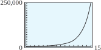
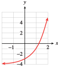
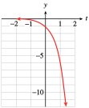
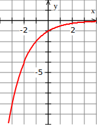
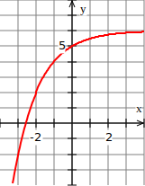

Section 4.2 Exponential Functions
¶In Section 4.1, we studied functions that describe exponential growth or decay. More formally, we define an exponential function as follows.
Exponential Function.
Some examples of exponential functions are
The constant \(a\) is the \(y\)-intercept of the graph because
For the examples above, we find that the \(y\)-intercepts are
The positive constant \(b\) is called the base of the exponential function.
Note 4.2.1.
- We do not allow \(b\) to be negative, because if \(b \lt 0\text{,}\) then \(b^x\) is not a real number for some values of \(x\text{.}\) For example, if \(b = -4\) and \(f (x) = (-4)^x\text{,}\) then \(f (1/2) = (-4)^{1/2}\) is an imaginary number.
- We also exclude \(b = 1\) as a base because \(1^x = 1\) for all values of \(x\text{;}\) hence the function \(f (x) = 1^x\) is actually the constant function \(f (x) = 1\text{.}\)
Subsection 4.2.1 Graphs of Exponential Functions
The graphs of exponential functions have two characteristic shapes, depending on whether the base, \(b\text{,}\) is greater than \(1\) or less than \(1\text{.}\) As typical examples, consider the graphs of \(f (x) = 2^x\) and \(g(x) =\left(\dfrac{1}{2}\right)^x\) shown below. Some values for \(f\) and \(g\) are recorded in the tables.
| \(x\) | \(f(x)\) |
| \(-3\) | \(\frac{1}{8}\) |
| \(-2\) | \(\frac{1}{4}\) |
| \(-1\) | \(\frac{1}{2}\) |
| \(0\) | \(1\) |
| \(1\) | \(2\) |
| \(2\) | \(4\) |
| \(3\) | \(8\) |
| \(x\) | \(g(x)\) |
| \(-3\) | \(8\) |
| \(-2\) | \(4\) |
| \(-1\) | \(2\) |
| \(0\) | \(1\) |
| \(1\) | \(\frac{1}{2}\) |
| \(2\) | \(\frac{1}{4}\) |
| \(3\) | \(\frac{1}{8}\) |
Notice that \(f (x) = 2^x\) is an increasing function and \(g(x) = \left(\dfrac{1}{2}\right)^x\) is a decreasing function. Both are concave up. In general, exponential functions have the following properties.
Properties of Exponential Functions, \(f(x) = ab^x\text{,}\) \(a \gt 0\).
Domain: all real numbers.
Range: all positive numbers.
-
If \(b \gt 1\text{,}\) the function is increasing and concave up;
if \(0 \lt b \lt 1\text{,}\) the function is decreasing and concave up.
The \(y\)-intercept is \((0, a)\text{.}\) There is no \(x\)-intercept.
In the table for \(f(x)\text{,}\) you can see that as the \(x\)-values decrease toward negative infinity, the corresponding \(y\)-values decrease toward zero. As a result, the graph of \(f\) decreases toward the \(x\)-axis as we move to the left. Thus, the negative \(x\)-axis is a horizontal asymptote for exponential functions with \(b \gt 1\text{,}\) as shown in figure (a).
For exponential functions with \(0 \lt b \lt 1\text{,}\) the positive \(x\)-axis is an asymptote, as illustrated in figure (b). (See Section 2.2 to review asymptotes.)
In Example 4.2.2, we compare two increasing exponential functions. The larger the value of the base, \(b\text{,}\) the faster the function grows. In this example, both functions have \(a = 1\text{.}\)
Example 4.2.2.
Compare the graphs of \(f (x) = 3^x\) and \(g(x) = 4^x\text{.}\)
We evaluate each function for several convenient values, as shown in the table.
Then we plot the points for each function and connect them with smooth curves. For positive \(x\)-values, \(g(x)\) is always larger than \(f(x)\text{,}\) and is increasing more rapidly. In the figure, we can see that \(g(x) = 4^x\) climbs more rapidly than \(f(x) = 3^x\text{.}\) Both graphs cross the \(y\)-axis at (0, 1).
| \(x\) | \(f(x)\) | \(g(x)\) |
| \(-2\) | \(\dfrac{1}{9}\) | \(\dfrac{1}{16}\) |
| \(-1\) | \(\dfrac{1}{3}\) | \(\dfrac{1}{4}\) |
| \(0\) | \(1\) | \(1\) |
| \(1\) | \(3\) | \(4\) |
| \(2\) | \(9\) | \(16\) |

Note 4.2.3.
For decreasing exponential functions, those with bases between \(0\) and \(1\text{,}\) the smaller the base, the more steeply the graph decreases. For example, compare the graphs of \(p(x) = 0.8^x\) and \(q(x) = 0.5^x\) shown in the figure at right.
Checkpoint 4.2.4.
- State the ranges of the functions \(f\) and \(g\) in Example 4.2.2 on the domain \([-2, 2]\text{.}\)
- State the ranges of the functions \(p\) and \(q\) shown in the Note above on the domain \([-2, 2]\text{.}\) Round your answers to two decimal places.
- \(\displaystyle f: \left[\dfrac{1}{9}, 9\right];~~g: \left[\dfrac{1}{16}, 16\right]\)
- \(\displaystyle p: [0.64, 1.56];~~q: [0.25, 4]\)
Subsection 4.2.2 Transformations of Exponential Functions
In Chapter 2, we considered transformations of the basic graphs. For instance, the graphs of the functions \(y = x^2 - 4\) and \(y = (x - 4)^2\) are shifts of the basic parabola, \(y = x^2\text{.}\) In a similar way, we can shift or stretch the graph of an exponential function while the basic shape is preserved.
Example 4.2.5.
Use your calculator to graph the following functions. Describe how these graphs compare with the graph of \(h(x) = 2^x\text{.}\)
- \(\displaystyle f (x) = 2^x + 3\)
- \(\displaystyle g(x) = 2^{x+3}\)
Enter the formulas for the three functions as shown below. Note the parentheses around the exponent in the keying sequence for \(Y_3 = g(x).\)
\(Y_1 = 2 \) ^ X
\(Y_2 = 2 \) ^ X + 3
\(Y_3 = 2 \) ^ ( X + 3 )
The graphs of \(h(x) = 2^x\text{,}\) \(f(x) = 2^x + 3\text{,}\) and \(g(x) = 2^{x+3}\) in the standard window are shown below.

The graph of \(f(x) = 2^x + 3\text{,}\) shown in figure (b), has the same basic shape as that of \(h(x) = 2^x\text{,}\) but it has a horizontal asymptote at \(y = 3\) instead of at \(y = 0\) (the \(x\)-axis). In fact, \(f(x) = h(x) + 3\text{,}\) so the graph of \(f\) is a vertical translation of the graph of \(h\) by \(3\) units. If every point on the graph of \(h(x) = 2^x\) is moved \(3\) units upward, the result is the graph of \(f (x) = 2^x + 3\text{.}\)
First note that \(g(x) = 2^x+3 = h(x + 3)\text{.}\) In fact, the graph of \(g(x) = 2^{x+3}\) shown in figure (c) has the same basic shape as \(h(x) = 2^x\) but has been translated \(3\) units to the left.
What about reflections? Recall that the graph of \(y = -f (x)\) is the reflection about the \(x\)-axis of the graph of \(y = f (x)\text{.}\) The graphs of \(y = 2^x\) and \(y = -2^x\) are shown at left below.

You may have also noticed a relationship between the graphs of \(f (x) = 2^x\) and \(g(x) = \left(\dfrac{1}{2}\right)^x\text{,}\) which are shown at right above. The graph of \(g\) is the reflection of the graph of \(f\) about the \(y\)-axis. We can see why this is true by writing the formula for \(g(x)\) in another way:
We see that \(g(x)\) is the same function as \(f(-x)\text{.}\) Replacing \(x\) by \(-x\) in the formula for a function switches every point \((p,q)\) on the graph with the point \((-p,q)\) and thus reflects the graph about the \(y\)-axis.
Reflections of Graphs.
The graph of \(y = -f (x)\) is the reflection of the graph of \(y = f (x)\) about the \(x\)-axis.
The graph of \(y = f (-x)\) is the reflection of the graph of \(y = f (x)\) about the \(y\)-axis.
Checkpoint 4.2.6.
Which of the functions below have the same graph? Explain why.
- \(\displaystyle f (x) =\left(\dfrac{1}{4}\right)^x\)
- \(\displaystyle g(x) = -4^x\)
- \(\displaystyle h(x) = 4^{-x}\)
(a) and (c)
Subsection 4.2.3 Comparing Exponential and Power Functions
Exponential functions are not the same as the power functions we studied in Chapter 3. Although both involve expressions with exponents, it is the location of the variable that makes the difference.
Power Functions vs Exponential Functions.
\(\hphantom{General formula and m}\) |
Power Functions |
Exponential Functions |
General formula |
\(h(x)=kx^p\) |
\(f(x)=ab^x\) |
Description |
variable base and constant exponent |
constant base and variable exponent |
Example |
\(h(x)=2x^3\) |
\(f(x)=2(3^x)\) |
These two families of functions have very different properties, as well.
Example 4.2.7.
Compare the power function \(h(x) = 2x^3\) and the exponential function \(f(x) = 2(3^x)\text{.}\)
First, compare the values for these two functions shown in the table.
The scaling exponent for \(h(x)\) is \(3\text{,}\) so that when \(x\) doubles, say, from \(1\) to \(2\text{,}\) the output is multiplied by \(2^3\text{,}\) or \(8\text{.}\)
On the other hand, we can tell that \(f\) is exponential because its values increase by a factor of \(3\) for each unit increase in \(x\text{.}\) (To see this, divide any function value by the previous one.)
| \(x\) | \(h(x)=2x^3\) | \(f(x)=2(3^x)\) |
| \(-3\) | \(-54\) | \(\dfrac{2}{27}\) |
| \(-2\) | \(-16\) | \(\dfrac{1}{4}\) |
| \(-1\) | \(-2\) | \(\dfrac{2}{3}\) |
| \(0\) | \(0\) | \(2\) |
| \(1\) | \(2\) | \(6\) |
| \(2\) | \(16\) | \(18\) |
| \(3\) | \(54\) | \(54\) |
As you would expect, the graphs of the two functions are also quite different. For starters, note that the power function goes through the origin, while the exponential function has \(y\)-intercept \((0, 2)\)as shown at left below.


From the table, we see that \(h(3) = f(3) = 54\text{,}\) so the two graphs intersect at \(x = 3\text{.}\) (They also intersect at approximately \(x = 2.48\text{.}\)) However, if you compare the values of \(h(x) = 2x^3\) and \(f(x) = 2(3^x)\) for larger values of \(x\text{,}\) you will see that eventually the exponential function overtakes the power function, as shown at right above.

The relationship in Example 4.2.7 holds true for all increasing power and exponential functions: For large enough values of \(x\text{,}\) the exponential function will always be greater than the power function, regardless of the parameters in the functions. The figure at left shows the graphs of \(f(x) = x^6\) and \(g(x) = 1.8^x\text{.}\) At first, \(f (x) \gt g(x)\text{,}\) but at around \(x = 37\text{,}\) \(g(x)\) overtakes \(f (x)\text{,}\) and \(g(x) \gt f (x)\) for all \(x \gt 37\text{.}\)
Checkpoint 4.2.8.
Which of the following functions are exponential functions, and which are power functions?
- \(\displaystyle F(x) = 1.5^x\)
- \(\displaystyle G(x) = 3x^{1.5}\)
- \(\displaystyle H(x) = 3^{1.5x}\)
- \(\displaystyle K(x) = (3x)^{1.5}\)
Exponential: (a) and (c); power: (b) and (d)
Subsection 4.2.4 Exponential Equations
An exponential equation is one in which the variable is part of an exponent. For example, the equation
is exponential.
Many exponential equations can be solved by writing both sides of the equation as powers with the same base. To solve the equation above, we write
which is true if and only if \(x = 4\text{.}\)
In general, if two equivalent powers have the same base, then their exponents must be equal also, as long as the base is not \(0\) or \(\pm 1\text{.}\)
Sometimes the laws of exponents can be used to express both sides of an equation as single powers of a common base.
Example 4.2.9.
Solve the following equations.
- \(\displaystyle 3^{x-2} = 9^3\)
- \(\displaystyle 27 \cdot 3^{-2x} = 9^{x+1}\)
- Using the fact that \(9 = 3^2\text{,}\) we write each side of the equation as a power of \(3\text{:}\)\begin{equation*} \begin{aligned}[t] 3^{x-2} \amp = \left(3^2\right)^3 \\ 3^{x-2} \amp = 3^6 \end{aligned} \end{equation*}Now we equate the exponents to obtain\begin{equation*} \begin{aligned}[t] x - 2 \amp = 6 \\ x \amp = 8 \end{aligned} \end{equation*}
- We write each factor as a power of \(3\text{.}\)\begin{equation*} 3^3 \cdot 3^{-2x} = \left(3^2\right)^{x+1} \end{equation*}We use the laws of exponents to simplify each side:\begin{equation*} 3^{3-2x} = 3^{2x+2} \end{equation*}Now we equate the exponents to obtain\begin{equation*} \begin{aligned}[t] 3 - 2x \amp = 2x + 2 \\ -4x =\amp -1 \end{aligned} \end{equation*}The solution is \(x = \dfrac{1}{4}\text{.}\)
Checkpoint 4.2.10.
Solve the equation \(~~2^{x+2} = 128\text{.}\)
Example 4.2.11.
During the summer a population of fleas doubles in number every \(5\) days. If a population starts with \(10\) fleas, how long will it be before there are \(10,240\) fleas?
Let \(P\) represent the number of fleas present after \(t\) days. The original population of \(10\) is multiplied by a factor of \(2\) every \(5\) days, or
We set \(P = \alert{10,240}\) and solve for \(t\text{:}\)
We equate the exponents to get \(10 = \dfrac{t}{5}\text{,}\) or \(t = 50\text{.}\) The population will grow to \(10,240\) fleas in \(50\) days.
Checkpoint 4.2.12.
During an advertising campaign in a large city, the makers of Chip-O’s corn chips estimate that the number of people who have heard of Chip-O’s increases by a factor of \(8\) every 4 days.
- If 100 people are given trial bags of Chip-O's to start the campaign, write a function, \(N(t)\text{,}\) for the number of people who have heard of Chip-O's after \(t\) days of advertising.
- Use your calculator to graph the function \(N(t)\) on the domain \(0 \le t \le 15\text{.}\)
- How many days should the makers run the campaign in order for Chip-O's to be familiar to \(51,200\) people? Use algebraic methods to find your answer and verify on your graph.
- \(\displaystyle N(t)=100 \cdot 8^{t/4}\)
- 
- 12 days
Checkpoint 4.2.13.
Use the graph of \(y = 5^x\) to find an approximate solution to \(5^x = 285\text{,}\) accurate to two decimal places.
\(x \approx 3.51\)
Subsection 4.2.5 Section Summary
¶Subsubsection 4.2.5.1 Vocabulary
Look up the definitions of new terms in the Glossary.
Exponential function
Base
Exponential equation
Subsubsection 4.2.5.2 CONCEPTS
-
An exponential function has the form
\begin{equation*} f (x) = ab^x\text{, where }~b\gt 0~~\text{ and }~~b \ne 1, ~a\ne 0 \end{equation*} Quantities that increase or decrease by a constant percent in each time period grow or decay exponentially.
Properties of Exponential Functions \(f(x)=ab^x, ~~a\gt 0\).
Domain: all real numbers.
Range: all positive numbers.
If \(b\gt 1\text{,}\) the function is increasing and concave up; if \(0\lt b\lt 1\text{,}\) the function is decreasing and concave up.
The \(y\)-intercept is \((0, a)\text{.}\) There is no \(x\)-intercept.
The graphs of exponential functions can be transformed by shifts, stretches, and reflections.
Reflections of Graphs.
The graph of \(y = -f (x)\) is the reflection of the graph of \(y = f (x)\) about the \(x\)-axis.
The graph of \(y = f (-x)\) is the reflection of the graph of \(y = f (x)\) about the \(y\)-axis.
Exponential functions \(f (x) = ab^x\) have different properties than power functions \(f (x) = kx^p\text{.}\)
We can solve some exponential equations by writing both sides with the same base and equating the exponents.
We can use graphs to find approximate solutions to exponential equations.
Subsubsection 4.2.5.3 STUDY QUESTIONS
Give the general form for an exponential function. What restrictions do we place on the base of the function?
Explain why the output of an exponential function \(f (x) = b^x\) is always positive, even if \(x\) is negative.
How are the graphs of the functions \(f (x) = b^x\) and \(g(x) = \left(\dfrac{1}{b} \right)^x\) related?
How is an exponential function different from a power function?
Delbert says that \(8\left(\dfrac{1}{2} \right)^x\) is equivalent to \(4^x\text{.}\) Convince him that he is mistaken.
Explain the algebraic technique for solving exponential equations described in this section.
Subsubsection 4.2.5.4 SKILLS
Practice each skill in the Homework 4.2.6 problems listed.
Describe the graph of an exponential function: #1–14
Graph transformations of exponential functions: #15–18, 53–60
Evaluate exponential functions: #19–22
Find the equation of an exponential function from its graph: #23–26
Solve exponential equations: #27–44
Distinguish between power and exponential functions: #45–52, 65, and 66
Exercises 4.2.6 Homework 4.2
¶Find the \(y\)-intercept of each exponential function and decide whether the graph is increasing or decreasing.
1.
\(f (x) = 26(1.4)^x\)
\(g(x) = 1.2(0.84)^x\)
\(h(x)=75\left(\dfrac{4}{5} \right)^x \)
\(k(x)=\dfrac{2}{3}\left(\dfrac{9}{8} \right)^x \)
\(26\text{;}\) increasing
\(1.2\text{;}\) decreasing
\(75\text{;}\) decreasing
\(\frac{2}{3} \text{;}\) increasing
2.
\(M(x) = 1.5(0.05)^x\)
\(N(x) = 0.05(1.05)^x\)
\(P(x)=\left(\dfrac{5}{8} \right)^x \)
\(Q(x)=\left(\dfrac{4}{3} \right)^x \)
Sketch the functions on the same set of axis with a domain of \([-3, 3]\text{.}\) Be sure to label your functions. Describe the similarities and differences between the two graphs.
3.
\(f(x)=3^x \)
\(g(x)=\left(\dfrac{1}{3} \right)^x \)
| \(x\) | \(-3\) | \(-2\) | \(-1\) | \(0\) | \(1\) | \(2\) | \(3\) |
| \(f(x)=3^x \) | \(\frac{1}{27} \) | \(\frac{1}{9} \) | \(\frac{1}{3} \) | \(1\) | \(3\) | \(9\) | \(27\) |
| \(g(x)=\left(\frac{1}{3} \right)^x \) | \(27\) | \(9\) | \(3\) | \(1\) | \(\frac{1}{3} \) | \(\frac{1}{9} \) | \(\frac{1}{27} \) |

The two graphs are reflections of each other across the \(y\)-axis. \(f\) is increasing, \(g\) is decreasing. \(f\) has the negative \(x\)-axis as an asymptote, and \(g\) has the positive \(x\)-axis as its asymptote.
4.
\(F(x)=\left(\dfrac{1}{10} \right)^x \)
\(G(x)=10^x \)
5.
\(h(t)=4^{-t} \)
\(q(t)=-4^t \)
| \(t\) | \(-3\) | \(-2\) | \(-1\) | \(0\) | \(1\) | \(2\) | \(3\) |
| \(h(t)=4^{-t} \) | \(64\) | \(16\) | \(4\) | \(1\) | \(\frac{1}{4} \) | \(\frac{1}{16} \) | \(\frac{1}{64} \) |
| \(q(t)=-4^t \) | \(\frac{-1}{64} \) | \(\frac{-1}{16} \) | \(\frac{-1}{4} \) | \(-1\) | \(-4\) | \(-16\) | \(-64\) |

The graphs are reflections of each other across the origin. Both are decreasing, but \(h\) has the negative \(t\)-axis as an asymptote, and \(q\) has the positive t-axis as its asymptote.
6.
\(g(t)=5^t \)
\(P(t)=-5^t \)
\(R(t)=5^{-t} \)
Match each function with its graph.
7.
\(f(x)=3(2^x) \)
\(f(x)=3\left(\dfrac{1}{2} \right)^x \)
\(f(x)=3\left(\dfrac{1}{3} \right)^x \)
\(f(x)=3(3^x)\)
I
IV
III
II
8.

\(g(x)=2(1.5^x) \)
\(g(x)=2\left(1.25 \right)^x \)
\(g(x)=2\left(0.75 \right)^x \)
\(g(x)=2(0.25)^x\)
For Problems 9–12,
Use a graphing calculator to graph the functions on the domain \([-5, 5]\text{.}\)
Give the range of the function on that domain, accurate to hundredths.


In each group of functions, which have identical graphs? Explain why using algebra and the properties of exponents.
13.
\(h(x) = 6^x \)
\(k(x)=\left(\dfrac{1}{6} \right)^x \)
\(m(x)=6^{-x} \)
\(n(x)=\dfrac{1}{6^x} \)
Because they are defined by equivalent expressions, (b), (c), and (d) have identical graphs
14.
\(Q(t)=5^t \)
\(R(t)=\left(\dfrac{1}{5} \right)^t \)
\(F(t)=\left(\dfrac{1}{5} \right)^{-t} \)
\(G(t)=\dfrac{1}{5^{-t}} \)
For Problems 15–18,
Use the order of operations to explain why the two functions are different.
Complete the table of values and graph both functions on the same set of axes.
Describe each as a transformation of \(y = 2^x\) or \(y = 3^x\text{.}\)
15.
\(f (x) = 2^{x-1}\text{,}\) \(~g(x) = 2^x - 1\)
| \(x\) | \(y=2^x\) | \(f(x)\) | \(g(x)\) |
| \(-2\) | \(\hphantom{0000} \) | \(\hphantom{0000} \) | \(\hphantom{0000} \) |
| \(-1\) | \(\) | \(\) | \(\) |
| \(0\) | \(\) | \(\) | \(\) |
| \(1\) | \(\) | \(\) | \(\) |
| \(2\) | \(\) | \(\) | \(\) |
To evaluate \(f\) we subtract \(1\) from the input before evaluating the exponential function; to evaluate \(g\) we subtract \(1\) from the output of the exponential function.
-
\(x\) \(y=2^x\) \(f(x)\) \(g(x)\) \(-2\) \(\dfrac{1}{4} \) \(\dfrac{1}{8} \) \(\dfrac{-3}{4} \) \(-1\) \(\dfrac{1}{2} \) \(\dfrac{1}{4} \) \(\dfrac{-1}{2} \) \(0\) \(1 \) \(\dfrac{1}{2} \) \(0 \) \(1\) \(2 \) \(1 \) \(1 \) \(2\) \(4 \) \(2 \) \(3 \) 
The graph of \(f\) is translated \(1\) unit to the right; the graph of \(g\) is shifted \(1\) unit down.
16.
\(f (x) = 3^x+2\text{,}\) \(~g(x) = 3^{x+2}\)
| \(x\) | \(y=3^x\) | \(f(x)\) | \(g(x)\) |
| \(-2\) | \(\hphantom{0000} \) | \(\hphantom{0000} \) | \(\hphantom{0000} \) |
| \(-1\) | \(\) | \(\) | \(\) |
| \(0\) | \(\) | \(\) | \(\) |
| \(1\) | \(\) | \(\) | \(\) |
| \(2\) | \(\) | \(\) | \(\) |
17.
\(f (x) = -3^{x}\text{,}\) \(~g(x) = 3^{-x}\)
| \(x\) | \(y=3^x\) | \(f(x)\) | \(g(x)\) |
| \(-2\) | \(\hphantom{0000} \) | \(\hphantom{0000} \) | \(\hphantom{0000} \) |
| \(-1\) | \(\) | \(\) | \(\) |
| \(0\) | \(\) | \(\) | \(\) |
| \(1\) | \(\) | \(\) | \(\) |
| \(2\) | \(\) | \(\) | \(\) |
To evaluate \(f\) we take the negative of the output of the exponential function; to evaluate \(g\) we take the negative of the input.
-
\(x\) \(y=3^x\) \(f(x)\) \(g(x)\) \(-2\) \(\dfrac{1}{9} \) \(\dfrac{-1}{9} \) \(9 \) \(-1\) \(\dfrac{1}{3} \) \(\dfrac{-1}{3} \) \(3 \) \(0\) \(1 \) \(-1 \) \(1 \) \(1\) \(3 \) \(-3 \) \(\dfrac{1}{3} \) \(2\) \(9 \) \(-9 \) \(\dfrac{1}{9} \) 
The graph of \(f\) is reflected about the \(x\)-axis; the graph of \(g\) is reflected about the \(y\)-axis.
18.
\(f (x) = 2^{-x}\text{,}\) \(~g(x) = -2^{x}\)
| \(x\) | \(y=2^x\) | \(f(x)\) | \(g(x)\) |
| \(-2\) | \(\hphantom{0000} \) | \(\hphantom{0000} \) | \(\hphantom{0000} \) |
| \(-1\) | \(\) | \(\) | \(\) |
| \(0\) | \(\) | \(\) | \(\) |
| \(1\) | \(\) | \(\) | \(\) |
| \(2\) | \(\) | \(\) | \(\) |
For the given function, evaluate each pair of expressions. Are they equivalent?
19.
\(f (x) = 3(5^x )\)
\(f (a + 2)\) and \(9f (a)\)
\(f (2a)\) and \(2 f (a)\)
\(3(5^{a+2})\) is not equivalent to \(9\cdot 3(5^a)\text{.}\)
\(3(5^{2a})\) is not equivalent to \(2\cdot 3 (5^a)\text{.}\)
20.
\(g(x) = 1.8^x\)
\(g(h + 3)\) and \(g(h) g(3)\)
\(g(2h)\) and \([g(h)]^2 \)
21.
\(P(t) = 8^t\)
\(P(w)-P(z) \) and \(P(w-z) \)
\(P(-x) \) and \(\dfrac{1}{P(x)} \)
\(8^w - 8^z\) is not equivalent to \(8^{w-z}\text{.}\)
\(8^{-x}\) is equivalent to \(\dfrac{1}{8^x}\text{.}\)
22.
\(Q(t)=5(0.2)^t \)
\(Q(b-1)\) and \(5Q(b) \)
\(Q(a)Q(b) \) and \(5Q(a+b) \)
23.
The graph of \(f (x) = P_0 b^x\) is shown in the figure.

Read the value of \(P_0\) from the graph.
Make a short table of values for the function by reading values from the graph. Does your table confirm that the function is exponential?
Use your table to calculate the growth factor, \(b\text{.}\)
Using your answers to parts (a) and (c), write a formula for \(f (x)\text{.}\)
\(P_0=300\)
\(x\) \(0\) \(1\) \(2\) \(f(x)\) \(300\) \(600\) \(1200\) \(b=2\)
\(f(x)=300(2)^x \)
24.
The graph of \(g(x) = P_0 b^x\) is shown in the figure.

Read the value of \(P_0\) from the graph.
Make a short table of values for the function by reading values from the graph. Does your table confirm that the function is exponential?
Use your table to calculate the decay factor, \(b\text{.}\)
Using your answers to parts (a) and (c), write a formula for \(g(x)\text{.}\)
25.
For several days after the Northridge earthquake on January 17, 1994, the area received a number of significant aftershocks. The red graph shows that the number of aftershocks decreased exponentially over time. The graph of the function \(S(d) = S_0b^d\text{,}\) shown in black, approximates the data. (Source: Los Angeles Times, June 27, 1995)

Read the value of \(S_0\) from the graph.
Find an approximation for the decay factor, \(b\text{,}\) by comparing two points on the graph. (Some of the points on the graph of \(S(d)\) are approximately \((1, 82)\text{,}\) \((2, 45)\text{,}\) \((3, 25)\text{,}\) and \((4, 14)\text{.}\))
Using your answers to (a) and (b), write a formula for \(S(d)\text{.}\)
\(S_0=150\)
\(b\approx 0.55\)
\(S(d) = 150(0.55)^d\)
26.
The frequency of a musical note depends on its pitch. The graph shows that the frequency increases exponentially. The function \(F(p) = F_0b^p\) gives the frequency as a function of the number of half-tones, \(p\text{,}\) above the starting point on the scale

Read the value of \(F_0\) from the graph. (This is the frequency of the note A above middle C.)
Find an approximation for the growth factor, \(b\text{,}\) by comparing two points on the graph. (Some of the points on the graph of \(F(p)\) are approximately \((1, 466)\text{,}\) \((2, 494)\text{,}\) \((3, 523)\text{,}\) and \((4, 554)\text{.}\))
Using your answers to (a) and (b), write a formula for \(F(p)\text{.}\)
The frequency doubles when you raise a note by one octave, which is equivalent to \(12\) half-tones. Use this information to find an exact value for \(b\text{.}\)
Solve each equation algebraically.
27.
\(5^{x+2} = 25\)
\(\dfrac{2}{3} \)
28.
\(3^{x-1} = 27^{1/2}\)
29.
\(3^{2x-1} =\dfrac{\sqrt{3}}{9} \)
\(\dfrac{-1}{4} \)
30.
\(2^{3x-1} =\dfrac{\sqrt{2}}{16} \)
31.
\(4\cdot 2^{x-3} = 8 \)
\(\dfrac{1}{7} \)
32.
\(9\cdot 3^{x+2} =81^{-x} \)
33.
\(27^{4x+2} =81^{x-1} \)
\(\dfrac{-5}{4} \)
34.
\(16^{2-3x} =64^{x+5} \)
35.
\(10^{x^2-1} =1000 \)
\(\pm 2 \)
36.
\(5^{x^2-x-4} =25 \)
37.
Before the advent of antibiotics, an outbreak of cholera might spread through a city so that the number of cases doubled every \(6\) days.
Twenty-six cases were discovered on July 5. Write a function for the number of cases of cholera \(t\) days later.
Use your calculator to graph your function on the interval \(0 \le t\le 90\text{.}\)
When should hospitals expect to be treating \(106,496\) cases? Use algebraic methods to find your answer, and verify it on your graph.
\(N(t) = 26(2)^{t/6}\)

\(72\) days later
38.
An outbreak of ungulate fever can sweep through the livestock in a region so that the number of animals affected triples every \(4\) days.
A rancher discovers \(4\) cases of ungulate fever among his herd. Write a function for the number of cases of ungulate fever \(t\) days later.
Use your calculator to graph your function on the interval \(0 \le t\le 20\text{.}\)
If the rancher does not act quickly, how long will it be until \(324\) head are affected? Use algebraic methods to find your answer, and verify it on your graph.
39.
A color television set loses \(30\%\) of its value every \(2\) years.
Write a function for the value of a television set \(t\) years after it was purchased if it cost \(\$700\) originally.
Use your calculator to graph your function on the interval \(0 \le t\le 20\text{.}\)
How long will it be before a \(\$700\) television set depreciates to \(\$343\text{?}\) Use algebraic methods to find your answer, and verify it on your graph.
\(V(t) = 700(0.7)^{t/2}\)

\(4\) yr
40.
A mobile home loses \(20\%\) of its value every \(3\) years.
A certain mobile home costs \(\$20,000\text{.}\) Write a function for its value after \(t\) years.
Use your calculator to graph your function on the interval \(0 \le t\le 30\text{.}\)
How long will it be before a \(\$20,000\) mobile home depreciates to \(\$12,800\text{?}\) Use algebraic methods to find your answer, and verify it on your graph.
Use a graph to find an approximate solution accurate to the nearest hundredth.
Decide whether each function is an exponential function, a power function, or neither.
45.
\(g(t)=3 t^{0.4} \)
\(h(t)=4(0.3)^t \)
\(D(x)=6x^{1/2} \)
\(E(x)=4x+x^4 \)
Power
Exponential
Power
Neither
46.
\(R(w) = 5(5)^{w-1} \)
\(Q(w) = 2^w-w^2 \)
\(M(z) = 0.2z^{1.3} \)
\(N(z) = z^{-3} \)
Decide whether the table could describe a linear function, a power function, an exponential function, or none of these.
47.
\(x\) \(y\) \(0\) \(3\) \(1\) \(6\) \(2\) \(12\) \(3\) \(24\) \(4\) \(48\) \(t\) \(P\) \(0\) \(0\) \(1\) \(0.5\) \(2\) \(2\) \(3\) \(4.5\) \(4\) \(8\)
Exponential \(y=3\cdot 2^x\)
Power \(P=0.5 t^2\)
48.
\(x\) \(N\) \(0\) \(0\) \(1\) \(2\) \(2\) \(16\) \(3\) \(54\) \(4\) \(128\) \(p\) \(R\) \(0\) \(405\) \(1\) \(135\) \(2\) \(45\) \(3\) \(15\) \(4\) \(5\)
49.
\(t\) \(y\) \(1\) \(100\) \(2\) \(50\) \(3\) \(33\frac{1}{3} \) \(4\) \(25\) \(5\) \(20\) \(x\) \(P\) \(1\) \(\frac{1}{2} \) \(2\) \(1\) \(3\) \(2\) \(4\) \(4\) \(5\) \(8\)
Power \(y=100 x^{-1}\)
Exponential \(P=\frac{1}{4} \cdot 2^x\)
50.
\(h\) \(a\) \(0\) \(70\) \(1\) \(7\) \(2\) \(0.7\) \(3\) \(0.07\) \(4\) \(0.007\) \(t\) \(Q\) \(0\) \(0\) \(1\) \(\frac{1}{4} \) \(2\) \(1\) \(3\) \(\frac{9}{4} \) \(4\) \(4\)
Fill in the tables. Graph each pair of functions in the same window. Then answer the questions below.
Give the range of \(f\) and the range of \(g\text{.}\)
For how many values of \(x\) does \(f (x) = g(x)\text{?}\)
Estimate the value(s) of \(x\) for which \(f (x) = g(x)\text{.}\)
For what values of \(x\) is \(f (x)\lt g(x)\text{?}\)
Which function grows more rapidly for large values of \(x\text{?}\)
51.
| \(x\) | \(f(x)=x^2\) | \(g(x)=2^x \) |
| \(-2\) | ||
| \(-1\) | ||
| \(0\) | ||
| \(1\) | ||
| \(2\) | ||
| \(3\) | ||
| \(4\) | ||
| \(5\) |
| \(x\) | \(f(x)=x^2\) | \(g(x)=2^x \) |
| \(-2\) | \(4\) | \(\frac{1}{4} \) |
| \(-1\) | \(1\) | \(\frac{1}{2} \) |
| \(0\) | \(0\) | 1 |
| \(1\) | \(1\) | \(2\) |
| \(2\) | \(4\) | \(4\) |
| \(3\) | \(9\) | \(8\) |
| \(4\) | \(16\) | \(16\) |
| \(5\) | \(25\) | \(32\) |

Range of \(f\text{:}\) \([0, \infty)\text{;}\) Range of \(g\text{:}\) \((0, \infty)\)
\(3\)
\(-0.7667\text{,}\) \(2\text{,}\) \(4\)
\((-0.7667, 2) \) and \((4,\infty)\)
g
52.
| \(x\) | \(f(x)=x^3\) | \(g(x)=3^x \) |
| \(-2\) | ||
| \(-1\) | ||
| \(0\) | ||
| \(1\) | ||
| \(2\) | ||
| \(3\) | ||
| \(4\) | ||
| \(5\) |
For Problems 53–60, state the domain and range of each transformation, its intercept(s), and any asymptotes.
53.
\(f(x)=3^x \)
\(y = f (x) - 4\)
\(y = f (x - 4)\)
\(y = -4 f (x)\)
-
\(y = 3^x - 4\)
Domain: \((-\infty, \infty)\text{;}\) range: \((-4, \infty)\text{,}\) \(x\)-intercept \((1.26, 0)\text{;}\) \(y\)-intercept \((0, -3)\text{;}\) horizontal asymptote \(y=-4\)
-
\(y=3^{x-4}\text{,}\)

Domain: \((-\infty, \infty)\text{;}\) range: \((0, \infty)\text{,}\) no \(x\)-intercept; \(y\)-intercept \(\left(0, \dfrac{1}{81}\right)\text{;}\) the \(x\)-axis is the horizontal asymptote.
-
\(y=-4\cdot 3^{x}\text{,}\)

Domain: \((-\infty, \infty)\text{;}\) range: \((-\infty, 0)\text{,}\) no \(x\)-intercept; \(y\)-intercept \((0, -4)\text{;}\) the \(x\)-axis is the horizontal asymptote.
54.
\(g(x)=4^x \)
\(y = g(x) +2\)
\(y = g(x +2)\)
\(y = 2g(x)\)
55.
\(h(t)=6^t \)
\(y = -h(t) \)
\(y = h(-t) \)
\(y = -h(-t) \)
-
\(y =-6^t\)
Domain: \((-\infty, \infty)\text{;}\) range: \((-\infty, 0)\text{,}\) no \(t\)-intercept; \(y\)-intercept \((0, -1)\text{;}\) the \(t\)-axis is the horizontal asymptote.
-
\(y=6^{-t}\text{,}\)

Domain: \((-\infty, \infty)\text{;}\) range: \((0, \infty)\text{,}\) no \(t\)-intercept; \(y\)-intercept \((0, 1)\text{;}\) the \(t\)-axis is the horizontal asymptote.
-
\(y=-6^{-t}\text{,}\)

Domain: \((-\infty, \infty)\text{;}\) range: \((-\infty, 0)\text{,}\) no \(t\)-intercept; \(y\)-intercept \((0, -1)\text{;}\) the \(t\)-axis is the horizontal asymptote.
56.
\(j(t)=\left(\dfrac{1}{3} \right)^t \)
\(y = j(-t) \)
\(y = -j(t)\)
\(y = -j(-t) \)
57.
\(g(x)=2^x \)
\(y = g(x-3) \)
\(y = g(x-3)+4 \)
-
\(y =2^{x-3}\)

Domain: \((-\infty, \infty)\text{;}\) range: \((0, \infty)\text{,}\) no \(x\)-intercept; \(y\)-intercept \(\left(0, \frac{1}{8}\right)\text{;}\) the \(x\)-axis is the horizontal asymptote.
-
\(y=2^{x-3}+4 \text{,}\)

Domain: \((-\infty, \infty)\text{;}\) range: \((4, \infty)\text{,}\) no \(x\)-intercept; \(y\)-intercept \(>\left(0, \frac{33}{8}\right)\text{;}\) horizontal asymptote \(y=4\)
58.
\(f(x)=10^x \)
\(y = f(x+5) \)
\(y = f(x+5)-20 \)
59.
\(N(t)=\left(\dfrac{1}{2} \right)^t \)
\(y = -N(t) \)
\(y = 6-N(t) \)
-
\(y =-\left(\dfrac{1}{2}\right)^t\)
Domain: \((-\infty, \infty)\text{;}\) range: \((-\infty, 0)\text{,}\) no \(t\)-intercept; \(y\)-intercept \((0, -1)\text{;}\) the \(t\)-axis is the horizontal asymptote.
-
\(y=6-\left(\dfrac{1}{2} \right)^t \text{,}\)
Domain: \((-\infty, \infty)\text{;}\) range: \((-\infty,6)\text{,}\) \(t\)-intercept approximately \((-2.58,0)\text{;}\) \(y\)-intercept \((0, 5)\text{;}\) horizontal asymptote is \(y=6\)
60.
\(P(t)=0.4^t \)
\(y = -P(t) \)
\(y = 8-P(t) \)
For Problems 61–64,
Describe the graph as a transformation of \(y = 2^x\text{.}\)
Give an equation for the function graphed.


Match the graph of each function to its formula. In each formula, \(a\gt 0\) and \(b \gt 1\text{.}\)
65.
\(y=ab^x\)
\(y=ab^{-x} \)
\(y=ax^b \)

I
III
II
66.
\(y=ax^{-b}\)
\(y=-ab^{x} \)
\(y=ax^{1/b} \)

67.
The function \(f (t)\) describes a volunteer's heart rate during a treadmill test.
The heart rate is given in beats per minute and \(t\) is in minutes. (See Section 2.2 to review functions defined piecewise.) (Source: Davis, Kimmet, and Autry, 1986)
-
Evaluate the function to complete the table.
\(t\) \(3.5\) \(4\) \(8\) \(10\) \(15\) \(f(t)\) \(\hphantom{0000}\) \(\hphantom{0000}\) \(\hphantom{0000}\) \(\hphantom{0000}\) \(\hphantom{0000}\) Sketch the graph of the function.
The treadmill test began with walking at \(5.5\) kilometers per hour, then jogging, starting at \(12\) kilometers per hour and increasing to \(14\) kilometers per hour, and finished with a cool-down walking period. Identify each of these activities on the graph and describe the volunteer's heart rate during each phase.
\(t\) \(3.5\) \(4\) \(8\) \(10\) \(15\) \(f(t)\) \(128\) \(154.75\) \(184.05\) \(150.93\) \(103.96\) 
From \(0\) to \(3\) minutes, the volunteer is walking with heart rate \(100\) beats per minute. The volunteer jogged at a steady pace from \(3\) to \(4\) minutes, and the heart rate increased to about \(155\) beats per minutes. From \(4\) to \(9\) minutes, the jogging pace increased, and the heart rate rose to about \(185\) beats per minute. The cooldown started at \(9\) minutes, and the heart rate decreased rapidly and leveled off to about \(100\) beats per minute.
68.
Carbon dioxide (\(\text{CO}_2\)) is called a greenhouse gas because it traps part of the Earth's outgoing energy. Animals release \(\text{CO}_2\) into the atmosphere, and plants remove \(\text{CO}_2\) through photosynthesis. In modern times, deforestation and the burning of fossil fuels both contribute to \(\text{CO}_2\) levels. The figure shows atmospheric concentrations of \(\text{CO}_2\text{,}\) in parts per million, measured at the Mauna Loa Observatory in Hawaii.
The red curve shows annual oscillations in \(\text{CO}_2\) levels. Can you explain why \(\text{CO}_2\) levels vary throughout the year?
The blue curve shows the average annual \(\text{CO}_2\) readings. By approximately how much does the \(\text{CO}_2\) level vary from its average value during the year?
In 1960, the average \(\text{CO}_2\) level was \(316.75\) parts per million, and the average level has been rising by \(0.4\%\) per year. If the level continues to rise at this rate, what \(\text{CO}_2\) readings can we expect in the year 2100?

For part (a): Why would photosynthesis vary throughout the year?